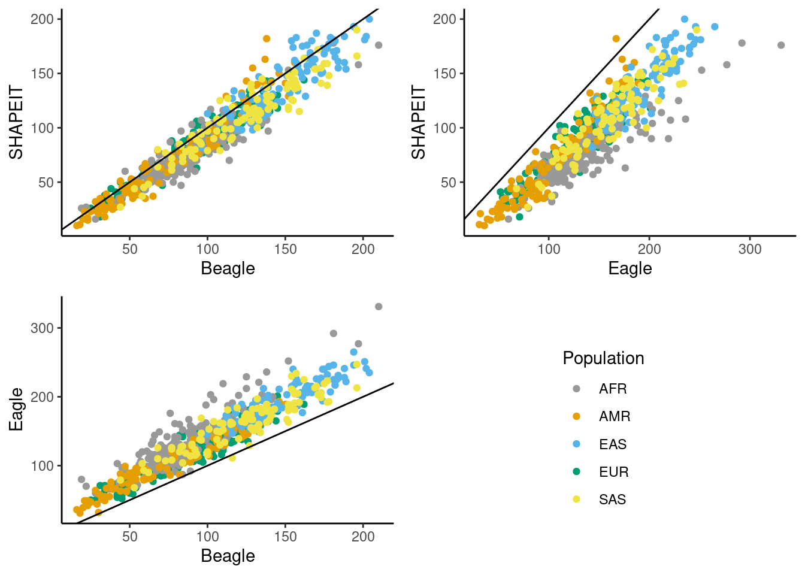

phasing_results_refRef
Andy Beck
2024-03-08
Last updated: 2024-03-19
Checks: 6 1
Knit directory: phasing/
This reproducible R Markdown analysis was created with workflowr (version 1.7.1). The Checks tab describes the reproducibility checks that were applied when the results were created. The Past versions tab lists the development history.
Great! Since the R Markdown file has been committed to the Git repository, you know the exact version of the code that produced these results.
Great job! The global environment was empty. Objects defined in the global environment can affect the analysis in your R Markdown file in unknown ways. For reproduciblity it’s best to always run the code in an empty environment.
The command set.seed(20220221) was run prior to running
the code in the R Markdown file. Setting a seed ensures that any results
that rely on randomness, e.g. subsampling or permutations, are
reproducible.
Great job! Recording the operating system, R version, and package versions is critical for reproducibility.
Nice! There were no cached chunks for this analysis, so you can be confident that you successfully produced the results during this run.
Using absolute paths to the files within your workflowr project makes it difficult for you and others to run your code on a different machine. Change the absolute path(s) below to the suggested relative path(s) to make your code more reproducible.
| absolute | relative |
|---|---|
| /net/snowwhite/home/beckandy/research/phasing/output/switch_errors/switch_errors/eagle/annotated/ | output/switch_errors/switch_errors/eagle/annotated |
| /net/snowwhite/home/beckandy/research/phasing/output/switch_errors/switch_errors/shapeit/annotated/ | output/switch_errors/switch_errors/shapeit/annotated |
| /net/snowwhite/home/beckandy/research/phasing/output/switch_errors/switch_errors/beagle/annotated/ | output/switch_errors/switch_errors/beagle/annotated |
| /net/snowwhite/home/beckandy/research/phasing/output/switch_errors/vcf_n_sites/ | output/switch_errors/vcf_n_sites |
| /net/snowwhite/home/beckandy/research/phasing/output/switch_errors/whatshap/ | output/switch_errors/whatshap |
| /net/snowwhite/home/beckandy/research/phasing/output/switch_errors/het_loc/ | output/switch_errors/het_loc |
| /net/snowwhite/home/beckandy/research/phasing/output/switch_errors/het_loc/annotated/ | output/switch_errors/het_loc/annotated |
| /net/snowwhite/home/beckandy/research/phasing/output/chrX_maf_simple.tsv | output/chrX_maf_simple.tsv |
| /net/snowwhite/home/beckandy/research/phasing/output/switch_errors/het_loc/phased_size.csv | output/switch_errors/het_loc/phased_size.csv |
Great! You are using Git for version control. Tracking code development and connecting the code version to the results is critical for reproducibility.
The results in this page were generated with repository version d8fc60c. See the Past versions tab to see a history of the changes made to the R Markdown and HTML files.
Note that you need to be careful to ensure that all relevant files for
the analysis have been committed to Git prior to generating the results
(you can use wflow_publish or
wflow_git_commit). workflowr only checks the R Markdown
file, but you know if there are other scripts or data files that it
depends on. Below is the status of the Git repository when the results
were generated:
Ignored files:
Ignored: .Rhistory
Ignored: .Rproj.user/
Ignored: data/1kgp/
Ignored: data/consensus/
Ignored: data/gnomAD/
Ignored: data/mask/
Ignored: data/ovary/
Ignored: data/recomb/
Ignored: data/ref/
Ignored: data/shapeit/
Ignored: output/2023_switch_errors/
Ignored: output/X_hets/
Ignored: output/admix_switch_errors/
Ignored: output/afr_eur_ref/
Ignored: output/background_rates/
Ignored: output/figures/
Ignored: output/filter_switch_errors/
Ignored: output/final_switch_errors/
Ignored: output/gnomad/
Ignored: output/male_only_reference/
Ignored: output/nygc/
Ignored: output/singleton_switch_errors/
Ignored: output/switch_errors/
Ignored: plink.log
Ignored: sandbox/
Note that any generated files, e.g. HTML, png, CSS, etc., are not included in this status report because it is ok for generated content to have uncommitted changes.
These are the previous versions of the repository in which changes were
made to the R Markdown
(analysis/phasing_results_refRef.Rmd) and HTML
(docs/phasing_results_refRef.html) files. If you’ve
configured a remote Git repository (see ?wflow_git_remote),
click on the hyperlinks in the table below to view the files as they
were in that past version.
| File | Version | Author | Date | Message |
|---|---|---|---|---|
| Rmd | d8fc60c | Andy Beck | 2024-03-19 | wflow_publish("analysis/phasing_results_refRef.Rmd") |
| html | 1a33c34 | Andy Beck | 2024-03-19 | Build site. |
| Rmd | cd3fb17 | Andy Beck | 2024-03-19 | wflow_publish("analysis/phasing_results_refRef.Rmd") |
| html | 020fff0 | Andy Beck | 2024-03-14 | Build site. |
| Rmd | 168a3d7 | Andy Beck | 2024-03-14 | wflow_publish("analysis/phasing_results_refRef.Rmd") |
| html | 10f995a | Andy Beck | 2024-03-13 | Build site. |
| Rmd | b513800 | Andy Beck | 2024-03-13 | wflow_publish("analysis/phasing_results_refRef.Rmd") |
| html | 542b85d | Andy Beck | 2024-03-13 | Build site. |
| Rmd | 400643c | Andy Beck | 2024-03-13 | wflow_publish("analysis/phasing_results_refRef.Rmd") |
| html | e340f5e | Andy Beck | 2024-03-12 | Build site. |
| Rmd | 8ce2855 | Andy Beck | 2024-03-12 | wflow_publish("analysis/phasing_results_refRef.Rmd") |
| html | d8d7a7e | Andy Beck | 2024-03-08 | Build site. |
| Rmd | 2b7807e | Andy Beck | 2024-03-08 | wflow_publish("analysis/phasing_results_refRef.Rmd") |
Libraries and Utility Functions
library(tidyverse)── Attaching core tidyverse packages ──────────────────────── tidyverse 2.0.0 ──
✔ dplyr 1.1.4 ✔ readr 2.1.5
✔ forcats 1.0.0 ✔ stringr 1.5.1
✔ ggplot2 3.5.0 ✔ tibble 3.2.1
✔ lubridate 1.9.3 ✔ tidyr 1.3.1
✔ purrr 1.0.2
── Conflicts ────────────────────────────────────────── tidyverse_conflicts() ──
✖ dplyr::filter() masks stats::filter()
✖ dplyr::lag() masks stats::lag()
ℹ Use the conflicted package (<http://conflicted.r-lib.org/>) to force all conflicts to become errorslibrary(janitor)
Attaching package: 'janitor'
The following objects are masked from 'package:stats':
chisq.test, fisher.testlibrary(reactable)
library(gtsummary)
library(corrr)
library(limma)
source("code/common_functions.R")
cbbPalette <- c("#999999", "#E69F00", "#56B4E9", "#009E73", "#F0E442", "#0072B2", "#D55E00", "#CC79A7")# function takes dataframe and two column names, returns a scatterplot
scatterplot <- function(df, x_var, y_var, colour_var, xlab, ylab){
ggplot(df) +
geom_point(aes(.data[[x_var]], .data[[y_var]], color = .data[[colour_var]])) +
labs(x = xlab, y = ylab) +
theme_classic() +
geom_abline(slope = 1, intercept = 0) +
scale_color_manual(values=cbbPalette)
}Directories
eagle_switch_dir <- "/net/snowwhite/home/beckandy/research/phasing/output/switch_errors/switch_errors/eagle/annotated/"
shapeit_switch_dir <- "/net/snowwhite/home/beckandy/research/phasing/output/switch_errors/switch_errors/shapeit/annotated/"
beagle_switch_dir <- "/net/snowwhite/home/beckandy/research/phasing/output/switch_errors/switch_errors/beagle/annotated/"
num_sites_dir <- "/net/snowwhite/home/beckandy/research/phasing/output/switch_errors/vcf_n_sites/"
whatshap_dir <- "/net/snowwhite/home/beckandy/research/phasing/output/switch_errors/whatshap/"
het_loc_dir <- "/net/snowwhite/home/beckandy/research/phasing/output/switch_errors/het_loc/"
het_loc_ann_dir <- "/net/snowwhite/home/beckandy/research/phasing/output/switch_errors/het_loc/annotated/"Load Data
rr_df_hapmap <- read_delim("data/recomb/genetic_map_X.txt",delim = " ", col_names = c("chr", "pos", "combined", "rr")) %>%
mutate(pos_n = lead(pos))Rows: 90982 Columns: 4
── Column specification ────────────────────────────────────────────────────────
Delimiter: " "
dbl (4): chr, pos, combined, rr
ℹ Use `spec()` to retrieve the full column specification for this data.
ℹ Specify the column types or set `show_col_types = FALSE` to quiet this message.df_freq <- read_tsv("/net/snowwhite/home/beckandy/research/phasing/output/chrX_maf_simple.tsv")Rows: 1744843 Columns: 9
── Column specification ────────────────────────────────────────────────────────
Delimiter: "\t"
chr (3): CHROM, A1, A2
dbl (6): POS, N_ALLELES, N_CHR, AF1, AF2, maf
ℹ Use `spec()` to retrieve the full column specification for this data.
ℹ Specify the column types or set `show_col_types = FALSE` to quiet this message.gc_content_1kb <- read_tsv("data/ref/gc1kb_X_only.bed")Rows: 156041 Columns: 12
── Column specification ────────────────────────────────────────────────────────
Delimiter: "\t"
chr (1): #1_usercol
dbl (11): 2_usercol, 3_usercol, 4_pct_at, 5_pct_gc, 6_num_A, 7_num_C, 8_num_...
ℹ Use `spec()` to retrieve the full column specification for this data.
ℹ Specify the column types or set `show_col_types = FALSE` to quiet this message.colnames(gc_content_1kb) <- c("CHR", "START", "END", "AT", "GC", "A", "C", "G", "T", "TOTAL", "OTHER", "LENGTH")
gc_content_1kb <- gc_content_1kb %>%
mutate(bin_id = (START / 1000) + 1)
df_vcftools <- lapply(c(1:700),
function(x){
switch_summary2(x, eagle_switch_dir, beagle_switch_dir, shapeit_switch_dir, gc_content_1kb, het_loc_ann_dir)
}) %>%
bind_rows()
df_vcftools$pop <- c(rep("EUR", 200), rep("AFR", 200), rep("AMR", 100), rep("EAS", 100), rep("SAS", 100))
df_wh_eagle <- get_all_whatshap("eagle", n = 700, pop = c(rep("EUR", 200), rep("AFR", 200), rep("AMR", 100), rep("EAS", 100), rep("SAS", 100)))
df_wh_beagle <- get_all_whatshap("beagle", n = 700, pop = c(rep("EUR", 200), rep("AFR", 200), rep("AMR", 100), rep("EAS", 100), rep("SAS", 100)))
df_wh_si <- get_all_whatshap("shapeit", n = 700, pop = c(rep("EUR", 200), rep("AFR", 200), rep("AMR", 100), rep("EAS", 100), rep("SAS", 100)))
# pd_size <- data.frame(id = 1:700, size = rep(0, 700))
# for(i in 1:700){
# df_het <- read_tsv(paste0(het_loc_dir, "pair_",i,"_het_loc.txt"), col_names = c("chr", "pos", "gt", "X"),show_col_types = FALSE)
# min_pos <- df_het$pos[1]
# max_pos <- df_het$pos[length(df_het$pos)]
# n_pos <- max_pos - min_pos
# pd_size$size[i] <- n_pos
# }
# write_csv(pd_size, "/net/snowwhite/home/beckandy/research/phasing/output/switch_errors/het_loc/phased_size.csv")
par_size <- (2781479 - 10001) + (156030895 - 155701383)
pd_size <- read_csv("/net/snowwhite/home/beckandy/research/phasing/output/switch_errors/het_loc/phased_size.csv",show_col_types = FALSE) %>%
mutate(size_mb = (size - par_size) / 1e6)
df_wh_eagle$size_mb <- pd_size$size_mb
df_wh_beagle$size_mb <- pd_size$size_mb
df_wh_si$size_mb <- pd_size$size_mb
df_vcftools$size_mb <- pd_size$size_mb
df_vcftools$switch_per_mb_beagle <- df_vcftools$n_other_beagle / df_vcftools$size_mb
df_vcftools$switch_per_mb_eagle <- df_vcftools$n_other_eagle / df_vcftools$size_mb
df_vcftools$switch_per_mb_shapeit <- df_vcftools$n_other_shapeit / df_vcftools$size_mb
df_vcftools$flip_per_mb_beagle <- df_vcftools$n_flip_beagle / df_vcftools$size_mb
df_vcftools$flip_per_mb_eagle <- df_vcftools$n_flip_eagle / df_vcftools$size_mb
df_vcftools$flip_per_mb_shapeit <- df_vcftools$n_flip_shapeit / df_vcftools$size_mb
df_vcftools$n_total_beagle <- df_vcftools$n_other_beagle + df_vcftools$n_flip_beagle
df_vcftools$n_total_eagle <- df_vcftools$n_other_eagle + df_vcftools$n_flip_eagle
df_vcftools$n_total_shapeit <- df_vcftools$n_other_shapeit + df_vcftools$n_flip_shapeit
df_vcftools$n_total_cpg_beagle <- df_vcftools$n_other_cpg_beagle + df_vcftools$n_flip_cpg_beagle
df_vcftools$n_total_cpg_eagle <- df_vcftools$n_other_cpg_eagle + df_vcftools$n_flip_cpg_eagle
df_vcftools$n_total_cpg_shapeit <- df_vcftools$n_other_cpg_shapeit + df_vcftools$n_flip_cpg_shapeit
df_vcftools$total_per_mb_beagle <- df_vcftools$n_total_beagle / df_vcftools$size_mb
df_vcftools$total_per_mb_eagle <- df_vcftools$n_total_eagle / df_vcftools$size_mb
df_vcftools$total_per_mb_shapeit <- df_vcftools$n_total_shapeit / df_vcftools$size_mb
# overlap counts
df_venn_eur <- get_error_counts(1:200, het_loc_ann_dir, beagle_switch_dir, eagle_switch_dir, shapeit_switch_dir, df_freq)
df_venn_afr <- get_error_counts(201:400, het_loc_ann_dir, beagle_switch_dir, eagle_switch_dir, shapeit_switch_dir, df_freq)
df_venn_amr <- get_error_counts(401:500, het_loc_ann_dir, beagle_switch_dir, eagle_switch_dir, shapeit_switch_dir, df_freq)
df_venn_eas <- get_error_counts(501:600, het_loc_ann_dir, beagle_switch_dir, eagle_switch_dir, shapeit_switch_dir, df_freq)
df_venn_sas <- get_error_counts(601:700, het_loc_ann_dir, beagle_switch_dir, eagle_switch_dir, shapeit_switch_dir, df_freq)Initial Results
We first look at the average counts for each type of error (flips and non-flip switches) for each method within each of the five 1kGP super-populations:
df_vcftools %>%
group_by(pop) %>%
summarise(mean_switch_eagle = mean(n_other_eagle),
mean_switch_beagle = mean(n_other_beagle),
mean_switch_shapeit = mean(n_other_shapeit),
mean_flip_eagle = mean(n_flip_eagle),
mean_flip_beagle = mean(n_flip_beagle),
mean_flip_shapeit = mean(n_flip_shapeit)) %>%
reactable()We see that in all populations, Eagle has a higher mean number of switch errors per synthetic diploid than Beagle, which in turn has a higher number of switch errors per synthetic diploid than SHAPEIT. In contrast, SHAPEIT has a higher average number of flip errors per synthetic diploid than the other two methods. Below we report the same metrics, but on a per-MB scale:
df_vcftools %>%
group_by(pop) %>%
summarize(mean_switch_eagle = mean(n_other_eagle / size_mb),
mean_switch_beagle = mean(n_other_beagle / size_mb),
mean_switch_shapeit = mean(n_other_shapeit / size_mb),
mean_flip_eagle = mean(n_flip_eagle / size_mb),
mean_flip_beagle = mean(n_flip_beagle / size_mb),
mean_flip_shapeit = mean(n_flip_shapeit / size_mb)) %>%
reactable()On a per-MB scale, we see the highest rate of switches per MB is observed in the EAS super-population across all three methods, while the lowest switch-error rate is observed in the AMR super-population. The AMR super-population consists of samples from 6 North American admixed samples. For flips, the highest rate of flips per MB for Eagle and Beagle are seen in the EAS super-population as well, while the highest observed rate for SHAPEIT is in the AFR super-population. The correlations of the flip and switch rates are presented below:
df_vcftools %>%
group_by(pop) %>%
summarize(mean_switch_eagle = mean(n_other_eagle / size_mb),
mean_switch_beagle = mean(n_other_beagle / size_mb),
mean_switch_shapeit = mean(n_other_shapeit / size_mb)) %>%
corrr::correlate(diagonal = 1, method = "pearson") %>%
reactable()Non-numeric variables removed from input: `pop`
Correlation computed with
• Method: 'pearson'
• Missing treated using: 'pairwise.complete.obs'df_vcftools %>%
group_by(pop) %>%
summarize(mean_switch_eagle = mean(n_other_eagle / size_mb),
mean_switch_beagle = mean(n_other_beagle / size_mb),
mean_switch_shapeit = mean(n_other_shapeit / size_mb)) %>%
corrr::correlate(diagonal = 1, method = "spearman") %>%
reactable()Non-numeric variables removed from input: `pop`
Correlation computed with
• Method: 'spearman'
• Missing treated using: 'pairwise.complete.obs'df_vcftools %>%
group_by(pop) %>%
summarize(mean_flip_eagle = mean(n_flip_eagle / size_mb),
mean_flip_beagle = mean(n_flip_beagle / size_mb),
mean_flip_shapeit = mean(n_flip_shapeit / size_mb)) %>%
corrr::correlate(diagonal = 1, method = "pearson") %>%
reactable()Non-numeric variables removed from input: `pop`
Correlation computed with
• Method: 'pearson'
• Missing treated using: 'pairwise.complete.obs'df_vcftools %>%
group_by(pop) %>%
summarize(mean_flip_eagle = mean(n_flip_eagle / size_mb),
mean_flip_beagle = mean(n_flip_beagle / size_mb),
mean_flip_shapeit = mean(n_flip_shapeit / size_mb)) %>%
corrr::correlate(diagonal = 1, method = "spearman") %>%
reactable()Non-numeric variables removed from input: `pop`
Correlation computed with
• Method: 'spearman'
• Missing treated using: 'pairwise.complete.obs'A similar metric is the mean number of heterozygous positions in-between each error. These can be thought of as “trials” at which an error could have occured but did not. Note that this isn’t quite right, as we consider each error type independently and are counting the number of heterozygoud positions between errors of each type that are not themselves locations of errors of that type.
df_vcftools %>%
group_by(pop) %>%
summarize(mean_het_switch_beagle = mean(mean_hets_switch_beagle),
mean_het_switch_eagle = mean(mean_hets_switch_eagle),
mean_het_switch_shapeit = mean(mean_hets_switch_shapeit)) %>%
reactable()The above table does not account for differences in the mean number of heterozygous positions within each synthethic diploid across the populations:
df_vcftools %>%
group_by(pop) %>%
summarize(mean_n_het = mean(n_hets),
sd_n_het = sd(n_hets)) %>%
reactable()Plots
Here we plot the count of errors within each synthetic diploid between each pair of methods.
Total Errors
p1 <- scatterplot(df_vcftools, "n_total_beagle", "n_total_eagle", "pop", "Beagle", "Eagle") + labs(colour="Population")
legend_obj <- cowplot::get_legend(p1)Warning in get_plot_component(plot, "guide-box"): Multiple components found;
returning the first one. To return all, use `return_all = TRUE`.p1 <- p1 + guides(colour = "none")
p2 <- scatterplot(df_vcftools, "n_total_beagle", "n_total_shapeit", "pop", "Beagle", "SHAPEIT") +
guides(colour="none")
p3 <- scatterplot(df_vcftools, "n_total_eagle", "n_total_shapeit", "pop", "Eagle", "SHAPEIT") +
guides(colour="none")
gridExtra::grid.arrange(p2, p3, p1, legend_obj, layout_matrix = matrix(c(1, 2, 3, 4), byrow = TRUE, ncol = 2))
Switches
p1 <- scatterplot(df_vcftools, "n_other_beagle", "n_other_eagle", "pop", "Beagle", "Eagle") + labs(colour="Population")
legend_obj <- cowplot::get_legend(p1)Warning in get_plot_component(plot, "guide-box"): Multiple components found;
returning the first one. To return all, use `return_all = TRUE`.p1 <- p1 + guides(colour = "none")
p2 <- scatterplot(df_vcftools, "n_other_beagle", "n_other_shapeit", "pop", "Beagle", "SHAPEIT") +
guides(colour="none")
p3 <- scatterplot(df_vcftools, "n_other_eagle", "n_other_shapeit", "pop", "Eagle", "SHAPEIT") +
guides(colour="none")
gridExtra::grid.arrange(p2, p3, p1, legend_obj, layout_matrix = matrix(c(1, 2, 3, 4), byrow = TRUE, ncol = 2))
Flips
p1 <- scatterplot(df_vcftools, "n_flip_beagle", "n_flip_eagle", "pop", "Beagle", "Eagle") + labs(colour="Population")
legend_obj <- cowplot::get_legend(p1)Warning in get_plot_component(plot, "guide-box"): Multiple components found;
returning the first one. To return all, use `return_all = TRUE`.p1 <- p1 + guides(colour = "none")
p2 <- scatterplot(df_vcftools, "n_flip_beagle", "n_flip_shapeit", "pop", "Beagle", "SHAPEIT") +
guides(colour="none")
p3 <- scatterplot(df_vcftools, "n_flip_eagle", "n_flip_shapeit", "pop", "Eagle", "SHAPEIT") +
guides(colour="none")
gridExtra::grid.arrange(p2, p3, p1, legend_obj, layout_matrix = matrix(c(1, 2, 3, 4), byrow = TRUE, ncol = 2))
| Version | Author | Date |
|---|---|---|
| 10f995a | Andy Beck | 2024-03-13 |
Options for comparing the methods
Raw Counts of Errors
This is the most straight-forward presentation of the results, and is what I’ve presented on many occasions. In essence, we simply count the type of each kind of error, and then report how many of each kind we see in each synthetic diploid. This lends itself nicely to figures, but the numbers themselves aren’t readily interpretable (or atleast, less so than a rate, for example).
Plots and tables can be found above in the document.
Errors per MB
This is simply the number of errors in each synthetic diploid divided by the number of MB between the first and last heterozygous position within each SD.
Switches
df_vcftools %>%
mutate(Beagle = n_other_beagle / size_mb,
Eagle = n_other_eagle / size_mb,
SHAPEIT = n_other_shapeit / size_mb) %>%
select(Beagle, Eagle, SHAPEIT) %>%
gtsummary::tbl_summary()| Characteristic | N = 7001 |
|---|---|
| Beagle | 0.66 (0.50, 0.85) |
| Eagle | 0.93 (0.74, 1.12) |
| SHAPEIT | 0.59 (0.43, 0.77) |
| 1 Median (IQR) | |
p1 <- df_vcftools %>%
mutate(Beagle = n_other_beagle / size_mb,
Eagle = n_other_eagle / size_mb,
SHAPEIT = n_other_shapeit / size_mb) %>%
scatterplot("Beagle", "Eagle", "pop", "Beagle", "Eagle") + labs(colour="Population")
legend_obj <- cowplot::get_legend(p1)Warning in get_plot_component(plot, "guide-box"): Multiple components found;
returning the first one. To return all, use `return_all = TRUE`.p1 <- p1 + guides(colour = "none")
p2 <- df_vcftools %>%
mutate(Beagle = n_other_beagle / size_mb,
Eagle = n_other_eagle / size_mb,
SHAPEIT = n_other_shapeit / size_mb) %>%
scatterplot("Beagle", "SHAPEIT", "pop", "Beagle", "SHAPEIT") +
guides(colour="none")
p3 <- df_vcftools %>%
mutate(Beagle = n_other_beagle / size_mb,
Eagle = n_other_eagle / size_mb,
SHAPEIT = n_other_shapeit / size_mb) %>%
scatterplot("Eagle", "SHAPEIT", "pop", "Eagle", "SHAPEIT") +
guides(colour="none")
gridExtra::grid.arrange(p2, p3, p1, legend_obj, layout_matrix = matrix(c(1, 2, 3, 4), byrow = TRUE, ncol = 2))Flips
df_vcftools %>%
mutate(Beagle = n_flip_beagle / size_mb,
Eagle = n_flip_eagle / size_mb,
SHAPEIT = n_flip_shapeit / size_mb) %>%
select(Beagle, Eagle, SHAPEIT) %>%
gtsummary::tbl_summary()| Characteristic | N = 7001 |
|---|---|
| Beagle | 0.60 (0.50, 0.71) |
| Eagle | 0.59 (0.49, 0.70) |
| SHAPEIT | 0.69 (0.57, 0.81) |
| 1 Median (IQR) | |
p1 <- df_vcftools %>%
mutate(Beagle = n_flip_beagle / size_mb,
Eagle = n_flip_eagle / size_mb,
SHAPEIT = n_flip_shapeit / size_mb) %>%
scatterplot("Beagle", "Eagle", "pop", "Beagle", "Eagle") + labs(colour="Population")
legend_obj <- cowplot::get_legend(p1)Warning in get_plot_component(plot, "guide-box"): Multiple components found;
returning the first one. To return all, use `return_all = TRUE`.p1 <- p1 + guides(colour = "none")
p2 <- df_vcftools %>%
mutate(Beagle = n_flip_beagle / size_mb,
Eagle = n_flip_eagle / size_mb,
SHAPEIT = n_flip_shapeit / size_mb) %>%
scatterplot("Beagle", "SHAPEIT", "pop", "Beagle", "SHAPEIT") +
guides(colour="none")
p3 <- df_vcftools %>%
mutate(Beagle = n_flip_beagle / size_mb,
Eagle = n_flip_eagle / size_mb,
SHAPEIT = n_flip_shapeit / size_mb) %>%
scatterplot("Eagle", "SHAPEIT", "pop", "Eagle", "SHAPEIT") +
guides(colour="none")
gridExtra::grid.arrange(p2, p3, p1, legend_obj, layout_matrix = matrix(c(1, 2, 3, 4), byrow = TRUE, ncol = 2))Errors per Heterozygous Position
For a given SD, the only location in the chromosome where errors can occur are at sites which are heterozygous. Thus we can think of each heterozygous location in the chromosome (other than the first) as a “trial”, and compute the proportion of these.
Switches
df_vcftools %>%
mutate(Beagle = n_other_beagle / n_hets,
Eagle = n_other_eagle / n_hets,
SHAPEIT = n_other_shapeit / n_hets) %>%
select(Beagle, Eagle, SHAPEIT) %>%
gtsummary::tbl_summary()| Characteristic | N = 7001 |
|---|---|
| Beagle | 0.0014 (0.0008, 0.0020) |
| Eagle | 0.0020 (0.0013, 0.0027) |
| SHAPEIT | 0.0013 (0.0007, 0.0019) |
| 1 Median (IQR) | |
p1 <- df_vcftools %>%
mutate(Beagle = n_other_beagle / n_hets,
Eagle = n_other_eagle / n_hets,
SHAPEIT = n_other_shapeit / n_hets) %>%
scatterplot("Beagle", "Eagle", "pop", "Beagle", "Eagle") + labs(colour="Population")
legend_obj <- cowplot::get_legend(p1)Warning in get_plot_component(plot, "guide-box"): Multiple components found;
returning the first one. To return all, use `return_all = TRUE`.p1 <- p1 + guides(colour = "none")
p2 <- df_vcftools %>%
mutate(Beagle = n_other_beagle / n_hets,
Eagle = n_other_eagle / n_hets,
SHAPEIT = n_other_shapeit / n_hets) %>%
scatterplot("Beagle", "SHAPEIT", "pop", "Beagle", "SHAPEIT") +
guides(colour="none")
p3 <- df_vcftools %>%
mutate(Beagle = n_other_beagle / n_hets,
Eagle = n_other_eagle / n_hets,
SHAPEIT = n_other_shapeit / n_hets) %>%
scatterplot("Eagle", "SHAPEIT", "pop", "Eagle", "SHAPEIT") +
guides(colour="none")
gridExtra::grid.arrange(p2, p3, p1, legend_obj, layout_matrix = matrix(c(1, 2, 3, 4), byrow = TRUE, ncol = 2))
Flips
df_vcftools %>%
mutate(Beagle = n_flip_beagle / n_hets,
Eagle = n_flip_eagle / n_hets,
SHAPEIT = n_flip_shapeit / n_hets) %>%
select(Beagle, Eagle, SHAPEIT) %>%
gtsummary::tbl_summary()| Characteristic | N = 7001 |
|---|---|
| Beagle | 0.0012 (0.0009, 0.0016) |
| Eagle | 0.0012 (0.0009, 0.0016) |
| SHAPEIT | 0.0014 (0.0011, 0.0018) |
| 1 Median (IQR) | |
p1 <- df_vcftools %>%
mutate(Beagle = n_flip_beagle / n_hets,
Eagle = n_flip_eagle / n_hets,
SHAPEIT = n_flip_shapeit / n_hets) %>%
scatterplot("Beagle", "Eagle", "pop", "Beagle", "Eagle") + labs(colour="Population")
legend_obj <- cowplot::get_legend(p1)Warning in get_plot_component(plot, "guide-box"): Multiple components found;
returning the first one. To return all, use `return_all = TRUE`.p1 <- p1 + guides(colour = "none")
p2 <- df_vcftools %>%
mutate(Beagle = n_flip_beagle / n_hets,
Eagle = n_flip_eagle / n_hets,
SHAPEIT = n_flip_shapeit / n_hets) %>%
scatterplot("Beagle", "SHAPEIT", "pop", "Beagle", "SHAPEIT") +
guides(colour="none")
p3 <- df_vcftools %>%
mutate(Beagle = n_flip_beagle / n_hets,
Eagle = n_flip_eagle / n_hets,
SHAPEIT = n_flip_shapeit / n_hets) %>%
scatterplot("Eagle", "SHAPEIT", "pop", "Eagle", "SHAPEIT") +
guides(colour="none")
gridExtra::grid.arrange(p2, p3, p1, legend_obj, layout_matrix = matrix(c(1, 2, 3, 4), byrow = TRUE, ncol = 2))Number more or less per SD
Within each synthetic diploid, we can look at the number of each type of error by method, and simply compute the difference between any two of the methods. While this requires more than one number to summarize the results across the method, it does provide within each SD a comparison of any two methods. However, we are again in a setting where the number without context is not directly interpretable.
Switches
df_vcftools %>%
mutate(b_v_e = n_other_beagle - n_other_eagle,
b_v_s = n_other_beagle - n_other_shapeit,
e_v_s = n_other_eagle - n_other_shapeit) %>%
select(b_v_e, b_v_s, e_v_s) %>%
gtsummary::tbl_summary() %>%
gtsummary::as_gt()| Characteristic | N = 7001 |
|---|---|
| b_v_e | -38 (-48, -28) |
| b_v_s | 10 (3, 17) |
| e_v_s | 48 (36, 59) |
| 1 Median (IQR) | |
df_vcftools %>%
mutate(b_v_e = n_other_beagle - n_other_eagle,
b_v_s = n_other_beagle - n_other_shapeit,
e_v_s = n_other_eagle - n_other_shapeit) %>%
ggplot(aes(x = b_v_e, y = b_v_s, colour = pop)) +
geom_point() +
xlab("Beagle - Eagle") +
ylab("Beagle - SHAPEIT") +
theme_classic() +
scale_colour_manual(values = cbbPalette)Flips
df_vcftools %>%
mutate(b_v_e = n_flip_beagle - n_flip_eagle,
b_v_s = n_flip_beagle - n_flip_shapeit,
e_v_s = n_flip_eagle - n_flip_shapeit) %>%
select(b_v_e, b_v_s, e_v_s) %>%
gtsummary::tbl_summary() %>%
gtsummary::as_gt()| Characteristic | N = 7001 |
|---|---|
| b_v_e | 0 (-8, 9) |
| b_v_s | -13 (-20, -6) |
| e_v_s | -14 (-22, -6) |
| 1 Median (IQR) | |
Re-writing the draft
We simulate synthetic diploids with known phase by sampling male X chromosomes from the 1kGP study. Each synthetic diploid is statistically phased with a reference panel consisting of the 1kGP samples which were not used to construct the synthetic diploid, and the results of the three phasing methods are compared to the true phase to assess their accuracy. Switches and flips are tallied within each synthetic diploid, and these counts form the basis of our evaluation of the performance of the three methods. Additionally, we evaluate the overlap of errors across methods by identifying shared switch and flip errors. The genomic context in which the errors occur is also evaluated by contrasting the density of errors across the X chromosome with genomic features including GC content and recombination rate.
The distribution of errors across methods
Total Errors
df_vcftools %>%
rowwise() %>%
mutate(delta_beagle_eagle = n_total_beagle - n_total_eagle,
delta_beagle_shapeit = n_total_beagle - n_total_shapeit,
delta_eagle_shapeit = n_total_eagle - n_total_shapeit,
e_big_b = n_total_eagle > n_total_beagle,
b_big_s =n_total_beagle > n_total_shapeit,
s_big_b =n_total_shapeit > n_total_beagle,
e_big_s = n_total_eagle > n_total_shapeit) %>%
select(starts_with("delta"),contains("_big_")) %>%
gtsummary::tbl_summary(statistic = list(all_continuous() ~ "{mean} ({sd})"),
digits = list(all_continuous() ~ c(1,2))) %>%
gtsummary::as_gt()| Characteristic | N = 7001 |
|---|---|
| delta_beagle_eagle | -39.0 (20.38) |
| delta_beagle_shapeit | -3.6 (14.38) |
| delta_eagle_shapeit | 35.5 (20.60) |
| e_big_b | 694 (99%) |
| b_big_s | 266 (38%) |
| s_big_b | 414 (59%) |
| e_big_s | 683 (98%) |
| 1 Mean (SD); n (%) | |
df_vcftools %>%
mutate(delta_beagle_eagle = n_total_beagle - n_total_eagle,
delta_beagle_shapeit = n_total_beagle - n_total_shapeit,
delta_eagle_shapeit = n_total_eagle - n_total_shapeit) %>%
select(pop, starts_with("delta")) %>%
gtsummary::tbl_summary(by=pop) %>% #gtsummary::tbl_summary(by=pop, statistic = list(all_continuous() ~ "{mean} ({sd})")) %>%
gtsummary::as_gt()| Characteristic | AFR, N = 2001 | AMR, N = 1001 | EAS, N = 1001 | EUR, N = 2001 | SAS, N = 1001 |
|---|---|---|---|---|---|
| delta_beagle_eagle | -43 (-53, -30) | -27 (-36, -19) | -45 (-56, -35) | -32 (-41, -23) | -43 (-55, -31) |
| delta_beagle_shapeit | -5 (-15, 4) | -6 (-14, 2) | -2 (-12, 12) | -2 (-11, 5) | 0 (-11, 10) |
| delta_eagle_shapeit | 37 (26, 49) | 21 (12, 30) | 45 (33, 58) | 30 (20, 38) | 40 (27, 56) |
| 1 Median (IQR) | |||||
Considering the total number of errors observed within each synthetic diploid, we find that Eagle tends to introduce more errors than both Beagle and SHAPEIT. On average, Eagle produces 39 more errors (\(\sigma=20.38\)) per synthetic diploid than Beagle, and 35.5 (\(\sigma=20.60\)) more errors than SHAPEIT. Across the 700 synthetic diploids, in 694 we observe more errors in Eagle than in Beagle, and similarly we observe more errors in Eagle than in SHAPEIT in 683 synthetic diploids. The distributions of total errors between Beagle and SHAPEIT are more similar, with Beagle producing on average 3.6 (\(\sigma=14.38\)) more errors per synthetic diploid than SHAPEIT, while SHAPEIT introduces more total errors in 414 of the synthetic diploids while Beagle introduces more errors in 266 of the synthetic diploids.
Switches
df_vcftools %>%
mutate(delta_beagle_eagle = n_other_beagle - n_other_eagle,
delta_beagle_shapeit = n_other_beagle - n_other_shapeit,
delta_eagle_shapeit = n_other_eagle - n_other_shapeit,
e_big_b = n_other_eagle > n_other_beagle,
b_big_e = n_other_eagle < n_other_beagle,
b_big_s =n_other_beagle > n_other_shapeit,
s_big_b =n_other_shapeit > n_other_beagle,
e_big_s = n_other_eagle > n_other_shapeit,
s_big_e = n_other_eagle < n_other_shapeit) %>%
select(starts_with("delta"),contains("_big_")) %>%
gtsummary::tbl_summary(statistic = list(all_continuous() ~ "{mean} ({sd})"),
digits = list(all_continuous() ~ c(1,2))) %>%
gtsummary::as_gt()| Characteristic | N = 7001 |
|---|---|
| delta_beagle_eagle | -39.3 (17.06) |
| delta_beagle_shapeit | 9.5 (11.00) |
| delta_eagle_shapeit | 48.7 (18.79) |
| e_big_b | 699 (100%) |
| b_big_e | 1 (0.1%) |
| b_big_s | 562 (80%) |
| s_big_b | 117 (17%) |
| e_big_s | 699 (100%) |
| s_big_e | 1 (0.1%) |
| 1 Mean (SD); n (%) | |
df_vcftools %>%
select(starts_with("n_other") & !contains("cpg")) %>%
gtsummary::tbl_summary(statistic = list(all_continuous() ~ "{mean} ({sd})"),
digits = list(all_continuous() ~ c(1,2)))| Characteristic | N = 7001 |
|---|---|
| n_other_eagle | 140.7 (45.94) |
| n_other_beagle | 101.4 (38.42) |
| n_other_shapeit | 91.9 (38.07) |
| 1 Mean (SD) | |
When we consider non-flip switches separately from flips, we find a similar pattern emerges as that seen with the counts of all errors. Eagle on average produces 39.3 (\(\sigma-17.06\)) more switches per synthetic diploid than Beagle, and 48.7 (\(\sigma=18.79\)) more switches per synthetic diploid than SHAPEIT. Both Beagle and SHAPEIT only produce more switches than Eagle in 1 synthetic diploid, while Beagle produces more switch errors than SHAPEIT in 562 synthetic diploids.
Flips
df_vcftools %>%
mutate(delta_beagle_eagle = n_flip_beagle - n_flip_eagle,
delta_beagle_shapeit = n_flip_beagle - n_flip_shapeit,
delta_eagle_shapeit = n_flip_eagle - n_other_shapeit,
e_big_b = n_flip_eagle > n_flip_beagle,
b_big_e = n_flip_eagle < n_flip_beagle,
b_big_s =n_flip_beagle > n_flip_shapeit,
s_big_b =n_flip_shapeit > n_flip_beagle,
e_big_s = n_flip_eagle > n_flip_shapeit,
s_big_e = n_flip_eagle < n_flip_shapeit) %>%
select(starts_with("delta"),contains("_big_")) %>%
gtsummary::tbl_summary(statistic = list(all_continuous() ~ "{mean} ({sd})"),
digits = list(all_continuous() ~ c(1,2))) %>%
gtsummary::as_gt()| Characteristic | N = 7001 |
|---|---|
| delta_beagle_eagle | 0.2 (12.62) |
| delta_beagle_shapeit | -13.0 (11.14) |
| delta_eagle_shapeit | -2.3 (29.01) |
| e_big_b | 330 (47%) |
| b_big_e | 345 (49%) |
| b_big_s | 75 (11%) |
| s_big_b | 612 (87%) |
| e_big_s | 100 (14%) |
| s_big_e | 585 (84%) |
| 1 Mean (SD); n (%) | |
df_vcftools %>%
select(starts_with("n_flip") & !contains("cpg")) %>%
gtsummary::tbl_summary(statistic = list(all_continuous() ~ "{mean} ({sd})"),
digits = list(all_continuous() ~ c(1,2)))| Characteristic | N = 7001 |
|---|---|
| n_flip_eagle | 89.6 (26.04) |
| n_flip_beagle | 89.8 (26.96) |
| n_flip_shapeit | 102.9 (29.07) |
| 1 Mean (SD) | |
df_vcftools %>%
select(starts_with("n_flip"), pop) %>%
gtsummary::tbl_summary(by = pop,
statistic = list(all_continuous() ~ "{mean} ({sd})"),
digits = list(all_continuous() ~ c(1,2))) | Characteristic | AFR, N = 2001 | AMR, N = 1001 | EAS, N = 1001 | EUR, N = 2001 | SAS, N = 1001 |
|---|---|---|---|---|---|
| n_flip_eagle | 100.8 (28.16) | 67.6 (19.05) | 106.2 (14.79) | 75.4 (17.55) | 101.2 (20.70) |
| n_flip_beagle | 101.9 (26.48) | 68.4 (23.04) | 108.4 (17.27) | 76.1 (20.00) | 96.1 (23.72) |
| n_flip_shapeit | 120.3 (29.37) | 79.6 (22.23) | 116.3 (17.68) | 87.1 (22.09) | 109.3 (23.63) |
| n_flip_cpg_eagle | 15.8 (5.98) | 10.5 (4.46) | 17.5 (4.98) | 11.9 (4.49) | 16.8 (4.96) |
| n_flip_cpg_beagle | 16.2 (5.47) | 10.9 (5.34) | 18.1 (4.72) | 12.2 (4.18) | 15.9 (4.97) |
| n_flip_cpg_shapeit | 18.8 (6.24) | 12.9 (5.14) | 19.3 (5.01) | 14.3 (5.03) | 17.8 (4.90) |
| 1 Mean (SD) | |||||
In contrast, when we examine the distribution of flip counts across methods, we find that SHAPEIT tends to introduce more flip errors, with an average of 13 (\(\sigma=11.14\)) more flips per synthetic diploid than Beagle and 2.3 (\(\sigma=29.01\)) more per synthetic diploid than Eagle.
# Total
df_vcftools %>%
mutate(errors_per_het_b = n_total_beagle / n_hets,
errors_per_het_e = n_total_eagle / n_hets,
errors_per_het_s = n_total_shapeit / n_hets) %>%
select(starts_with("errors_per_het"), pop) %>%
gtsummary::tbl_summary(by = pop,
statistic = list(all_continuous() ~ "{mean} ({sd})"),
digits = list(all_continuous() ~ c(4,4))) | Characteristic | AFR, N = 2001 | AMR, N = 1001 | EAS, N = 1001 | EUR, N = 2001 | SAS, N = 1001 |
|---|---|---|---|---|---|
| errors_per_het_b | 0.0019 (0.0005) | 0.0024 (0.0014) | 0.0048 (0.0007) | 0.0028 (0.0007) | 0.0034 (0.0009) |
| errors_per_het_e | 0.0024 (0.0006) | 0.0028 (0.0014) | 0.0056 (0.0008) | 0.0033 (0.0008) | 0.0041 (0.0009) |
| errors_per_het_s | 0.0020 (0.0005) | 0.0025 (0.0014) | 0.0048 (0.0008) | 0.0028 (0.0007) | 0.0034 (0.0009) |
| 1 Mean (SD) | |||||
# Switches
df_vcftools %>%
mutate(other_per_het_b = n_other_beagle / n_hets,
other_per_het_e = n_other_eagle / n_hets,
other_per_het_s = n_other_shapeit / n_hets) %>%
select(starts_with("other_per"), pop) %>%
gtsummary::tbl_summary(by = pop,
statistic = list(all_continuous() ~ "{mean} ({sd})"),
digits = list(all_continuous() ~ c(4,4))) | Characteristic | AFR, N = 2001 | AMR, N = 1001 | EAS, N = 1001 | EUR, N = 2001 | SAS, N = 1001 |
|---|---|---|---|---|---|
| other_per_het_b | 0.0009 (0.0003) | 0.0013 (0.0009) | 0.0028 (0.0005) | 0.0015 (0.0004) | 0.0019 (0.0005) |
| other_per_het_e | 0.0014 (0.0004) | 0.0017 (0.0010) | 0.0037 (0.0005) | 0.0021 (0.0005) | 0.0025 (0.0006) |
| other_per_het_s | 0.0008 (0.0002) | 0.0012 (0.0009) | 0.0026 (0.0005) | 0.0014 (0.0004) | 0.0017 (0.0005) |
| 1 Mean (SD) | |||||
# Flips
df_vcftools %>%
mutate(flips_per_het_b = n_flip_beagle / n_hets,
flips_per_het_e = n_flip_eagle / n_hets,
flips_per_het_s = n_flip_shapeit / n_hets) %>%
select(starts_with("flips_per_het"), pop) %>%
gtsummary::tbl_summary(by = pop,
statistic = list(all_continuous() ~ "{mean} ({sd})"),
digits = list(all_continuous() ~ c(4,4))) | Characteristic | AFR, N = 2001 | AMR, N = 1001 | EAS, N = 1001 | EUR, N = 2001 | SAS, N = 1001 |
|---|---|---|---|---|---|
| flips_per_het_b | 0.0010 (0.0003) | 0.0011 (0.0005) | 0.0020 (0.0003) | 0.0012 (0.0003) | 0.0015 (0.0004) |
| flips_per_het_e | 0.0010 (0.0003) | 0.0011 (0.0004) | 0.0020 (0.0003) | 0.0012 (0.0003) | 0.0016 (0.0003) |
| flips_per_het_s | 0.0012 (0.0003) | 0.0013 (0.0005) | 0.0021 (0.0003) | 0.0014 (0.0004) | 0.0017 (0.0004) |
| 1 Mean (SD) | |||||
The rankings of the three methods with regards to the number of total errors, number of switches, and number of flips per synthetic diploid are mostly consistent across the five 1kGP super-populations. Scaling the counts of errors by the number of heterozygous sites within each synthetic diploid, we observe for total errors that Eagle has a higher average rate of errors while SHAPEIT and Beagle are similar within each population. For switches, the order from highest to lowest switch rate rank is Eagle, Beagle, and SHAPEIT in all 5 populations, while for flips SHAPEIT has the highest rate of flips in all populations while Beagle and Eagle have similar average rates in all populations. Additionally, the mean count per synthetic diploid in all three methods are highly correlated across all pairs of populations.
# correlations of average error counts across populations
df_vcftools %>%
select(pop, starts_with("n_total")) %>%
group_by(pop) %>%
summarize(beagle = mean(n_total_beagle),
eagle = mean(n_total_eagle),
shapeit = mean(n_total_shapeit)) %>%
pivot_longer(!pop, names_to = "col1", values_to = "col2") %>%
pivot_wider(names_from = "pop", values_from = "col2") %>%
correlate() %>%
shave() %>%
fashion(decimals = 3)Non-numeric variables removed from input: `col1`
Correlation computed with
• Method: 'pearson'
• Missing treated using: 'pairwise.complete.obs' term AFR AMR EAS EUR SAS
1 AFR
2 AMR .995
3 EAS .991 .974
4 EUR .999 .989 .997
5 SAS .994 .979 1.000 .998 df_vcftools %>%
select(pop, starts_with("n_total")) %>%
group_by(pop) %>%
summarize(beagle = mean(n_total_beagle),
eagle = mean(n_total_eagle),
shapeit = mean(n_total_shapeit)) %>%
select(-pop) %>%
correlate(method = "pearson") %>%
shave() %>%
fashion()Correlation computed with
• Method: 'pearson'
• Missing treated using: 'pairwise.complete.obs' term beagle eagle shapeit
1 beagle
2 eagle 1.00
3 shapeit 1.00 1.00 # switches
df_vcftools %>%
select(pop, starts_with("n_other")) %>%
group_by(pop) %>%
summarize(beagle = mean(n_other_beagle),
eagle = mean(n_other_eagle),
shapeit = mean(n_other_shapeit)) %>%
pivot_longer(!pop, names_to = "col1", values_to = "col2") %>%
pivot_wider(names_from = "pop", values_from = "col2") %>%
correlate() %>%
shave() %>%
fashion(decimals = 3)Non-numeric variables removed from input: `col1`
Correlation computed with
• Method: 'pearson'
• Missing treated using: 'pairwise.complete.obs' term AFR AMR EAS EUR SAS
1 AFR
2 AMR .998
3 EAS .998 1.000
4 EUR 1.000 .998 .999
5 SAS .999 .995 .995 .999 df_vcftools %>%
select(pop, starts_with("n_other")) %>%
group_by(pop) %>%
summarize(beagle = mean(n_other_beagle),
eagle = mean(n_other_eagle),
shapeit = mean(n_other_shapeit)) %>%
select(-pop) %>%
correlate(method = "pearson") %>%
shave() %>%
fashion()Correlation computed with
• Method: 'pearson'
• Missing treated using: 'pairwise.complete.obs' term beagle eagle shapeit
1 beagle
2 eagle .98
3 shapeit .99 .97 # flips
df_vcftools %>%
select(pop, starts_with("n_flip")) %>%
group_by(pop) %>%
summarize(beagle = mean(n_flip_beagle),
eagle = mean(n_flip_eagle),
shapeit = mean(n_flip_shapeit)) %>%
pivot_longer(!pop, names_to = "col1", values_to = "col2") %>%
pivot_wider(names_from = "pop", values_from = "col2") %>%
correlate() %>%
shave() %>%
fashion(decimals = 3)Non-numeric variables removed from input: `col1`
Correlation computed with
• Method: 'pearson'
• Missing treated using: 'pairwise.complete.obs' term AFR AMR EAS EUR SAS
1 AFR
2 AMR 1.000
3 EAS .988 .991
4 EUR 1.000 1.000 .989
5 SAS .903 .896 .827 .902 df_vcftools %>%
select(pop, starts_with("n_flip")) %>%
group_by(pop) %>%
summarize(beagle = mean(n_flip_beagle),
eagle = mean(n_flip_eagle),
shapeit = mean(n_flip_shapeit)) %>%
select(-pop) %>%
correlate(method = "pearson") %>%
shave() %>%
fashion()Correlation computed with
• Method: 'pearson'
• Missing treated using: 'pairwise.complete.obs' term beagle eagle shapeit
1 beagle
2 eagle .99
3 shapeit .98 .97 Overlap of Errors Across Methods
df_venn_eur[[1]] %>% count_to_ven()
NULLdf_venn_eur[[2]] %>% count_to_ven()
NULLIn addition to the comparisons of counts of switch and flips errors, we also evaluate the overlap of switch and flip errors by counting the number of overlapping switches and flips within each synthetic diploid. We only consider switches which overlap with switches between methods and flips which directly overlap between methods, i.e. flips that start at the same heterozygous position within the synthetic diploid. Across the 200 European synthetic diploids, we observe a total of 41470 switch errors, of which 27707 are unique to one of the three methods. Between the methods, 38.4% of Beagle’s switches are unique to Beagle, while 57.9% of Eagle’s switches are unique to Eagle and 35.1% of SHAPEIT’s switches are unique to SHAPEIT. Of the 30725 total flip errors we observe in the 200 EUR synthetic diploids, 17848 are unique to a particular method within a synthetic diploid (~58.1%). Considering the percent of switches unique to the method within each method, Beagle has 31.9% of its observations unique to itself, Eagle has 41.2% of its observations unique to itself, and SHAPEIT has 38.2% of its observations unique to itself.
df_eur_bin <- get_errors_mb(1:200, 1e6, het_loc_ann_dir, beagle_switch_dir, eagle_switch_dir, shapeit_switch_dir, df_freq)
df_eur_bin %>%
ggplot(aes(x = bin_id, y = hets)) +
geom_point() +
geom_line() +
ggtitle("Aggregated Heterozygous Sites per Bin", "EUR Synthetic Diploids") +
xlab("Bin") +
ylab("Heterozygous Sites") +
theme_classic()
df_eur_bin %>%
select(bin_id, beagle_s, eagle_s, shapeit_s) %>%
rename(Beagle = beagle_s, Eagle = eagle_s, SHAPEIT = shapeit_s) %>%
pivot_longer(-bin_id, names_to = "Method", values_to = "Switches") %>%
ggplot(aes(x = bin_id, y = Switches, color = Method )) +
geom_point() +
geom_line() +
theme_classic() +
xlab("Bin") +
ggtitle("Switches per MB Bin", "EUR Synthetic Diploids")
df_eur_bin %>%
mutate(beagle = beagle_s / hets,
eagle = eagle_s / hets,
shapeit = shapeit_s / hets) %>%
select(bin_id, beagle, eagle, shapeit) %>%
rename(Beagle = beagle, Eagle = eagle, SHAPEIT = shapeit) %>%
pivot_longer(-bin_id, names_to = "Method", values_to = "Switches") %>%
ggplot(aes(x = bin_id, y = Switches, color = Method )) +
geom_point() +
geom_line() +
theme_classic() +
xlab("Bin") +
ggtitle("Switches per Heterozygous Site per MB Bin", "EUR Synthetic Diploids")
df_eur_bin %>%
mutate(beagle = beagle_s / hets,
eagle = eagle_s / hets,
shapeit = shapeit_s / hets) %>%
select(bin_id, beagle, eagle, shapeit) %>%
rename(Beagle = beagle, Eagle = eagle, SHAPEIT = shapeit) %>%
pivot_longer(-bin_id, names_to = "Method", values_to = "Switches") %>%
ggplot(aes(x = bin_id, y = Switches, color = Method )) +
geom_point() +
geom_line() +
scale_y_log10() +
theme_classic(base_size = 12) +
xlab("Bin") +
ggtitle("Switches per Heterozygous Site per MB Bin", "EUR Synthetic Diploids")
df_eur_bin %>%
mutate(beagle = beagle_s / hets,
eagle = eagle_s / hets,
shapeit = shapeit_s / hets) %>%
select(beagle, eagle, shapeit) %>%
cor() %>%
knitr::kable()| beagle | eagle | shapeit | |
|---|---|---|---|
| beagle | 1.0000000 | 0.8049264 | 0.9833337 |
| eagle | 0.8049264 | 1.0000000 | 0.7396459 |
| shapeit | 0.9833337 | 0.7396459 | 1.0000000 |
df_eur_bin %>%
mutate(beagle = beagle_s / hets,
eagle = eagle_s / hets,
shapeit = shapeit_s / hets) %>%
select(beagle, eagle, shapeit) %>%
cor(method = "spearman") %>%
knitr::kable()| beagle | eagle | shapeit | |
|---|---|---|---|
| beagle | 1.0000000 | 0.8976438 | 0.9754061 |
| eagle | 0.8976438 | 1.0000000 | 0.8271419 |
| shapeit | 0.9754061 | 0.8271419 | 1.0000000 |
While the identification of shared switches and flips offers a glimpse into the similarity of phasing errors across methods, we are also interested in
df_eur_bin <- get_errors_mb(1:200, 1e7, het_loc_ann_dir, beagle_switch_dir, eagle_switch_dir, shapeit_switch_dir, df_freq)
df_eur_bin %>%
ggplot(aes(x = bin_id, y = hets)) +
geom_point() +
geom_line() +
ggtitle("Aggregated Heterozygous Sites per Bin", "EUR Synthetic Diploids") +
xlab("Bin") +
ylab("Heterozygous Sites") +
theme_classic()df_eur_bin %>%
select(bin_id, beagle_s, eagle_s, shapeit_s) %>%
rename(Beagle = beagle_s, Eagle = eagle_s, SHAPEIT = shapeit_s) %>%
pivot_longer(-bin_id, names_to = "Method", values_to = "Switches") %>%
ggplot(aes(x = bin_id, y = Switches, color = Method )) +
geom_point() +
geom_line() +
theme_classic() +
xlab("Bin") +
ggtitle("Switches per 10 MB Bin", "EUR Synthetic Diploids")df_eur_bin %>%
mutate(beagle = beagle_s / hets,
eagle = eagle_s / hets,
shapeit = shapeit_s / hets) %>%
select(bin_id, beagle, eagle, shapeit) %>%
rename(Beagle = beagle, Eagle = eagle, SHAPEIT = shapeit) %>%
pivot_longer(-bin_id, names_to = "Method", values_to = "Switches") %>%
ggplot(aes(x = bin_id, y = Switches, color = Method )) +
geom_point() +
geom_line() +
theme_classic() +
xlab("Bin") +
ggtitle("Switches per Heterozygous Site per 10 MB Bin", "EUR Synthetic Diploids")df_eur_bin %>%
mutate(beagle = beagle_s / hets,
eagle = eagle_s / hets,
shapeit = shapeit_s / hets) %>%
select(bin_id, beagle, eagle, shapeit) %>%
rename(Beagle = beagle, Eagle = eagle, SHAPEIT = shapeit) %>%
pivot_longer(-bin_id, names_to = "Method", values_to = "Switches") %>%
ggplot(aes(x = bin_id, y = Switches, color = Method )) +
geom_point() +
geom_line() +
scale_y_log10() +
theme_classic() +
xlab("Bin") +
ggtitle("Switches per Heterozygous Site per 10 MB Bin", "EUR Synthetic Diploids")df_eur_bin %>%
mutate(beagle = beagle_s / hets,
eagle = eagle_s / hets,
shapeit = shapeit_s / hets) %>%
select(beagle, eagle, shapeit) %>%
cor() %>%
knitr::kable()| beagle | eagle | shapeit | |
|---|---|---|---|
| beagle | 1.0000000 | 0.8272299 | 0.9924824 |
| eagle | 0.8272299 | 1.0000000 | 0.7693196 |
| shapeit | 0.9924824 | 0.7693196 | 1.0000000 |
df_eur_bin %>%
mutate(beagle = beagle_s / hets,
eagle = eagle_s / hets,
shapeit = shapeit_s / hets) %>%
select(beagle, eagle, shapeit) %>%
cor(method = "spearman") %>%
knitr::kable()| beagle | eagle | shapeit | |
|---|---|---|---|
| beagle | 1.0000000 | 0.8647059 | 0.9882353 |
| eagle | 0.8647059 | 1.0000000 | 0.7882353 |
| shapeit | 0.9882353 | 0.7882353 | 1.0000000 |
Genomic Context of Errors
CpG
df_vcftools %>%
mutate(beagle = (n_total_cpg_beagle / n_total_beagle) / prop_het_cpg,
eagle = (n_total_cpg_eagle / n_total_eagle) / prop_het_cpg,
shapeit =( n_total_cpg_shapeit / n_total_shapeit) / prop_het_cpg ) %>%
select(pop, beagle, eagle, shapeit) %>%
pivot_longer(-pop, names_to = "Method", values_to = "Enrichment") %>%
ggplot(aes(x = Method, y = Enrichment)) +
geom_abline(slope = 0, intercept = 1) +
geom_boxplot() +
theme_classic() +
labs(colour = "Population") +
ggtitle("Enrichment of Errors at CpG Sites")
df_vcftools %>%
mutate(beagle = (n_total_cpg_beagle / n_total_beagle) / prop_het_cpg,
eagle = (n_total_cpg_eagle / n_total_eagle) / prop_het_cpg,
shapeit =( n_total_cpg_shapeit / n_total_shapeit) / prop_het_cpg ) %>%
select(pop, beagle, eagle, shapeit) %>%
pivot_longer(-pop, names_to = "Method", values_to = "Enrichment") %>%
ggplot(aes(x = Method, y = Enrichment, colour = pop)) +
geom_abline(slope = 0, intercept = 1) +
geom_boxplot() +
theme_classic() +
labs(colour = "Population") +
ggtitle("Enrichment of Errors at CpG Sites") +
scale_color_manual(values = cbbPalette)
#Switches
df_vcftools %>%
mutate(beagle = (n_other_cpg_beagle / n_other_beagle) / prop_het_cpg,
eagle = (n_other_cpg_eagle / n_other_eagle) / prop_het_cpg,
shapeit =( n_other_cpg_shapeit / n_other_shapeit) / prop_het_cpg ) %>%
select(pop, beagle, eagle, shapeit) %>%
pivot_longer(-pop, names_to = "Method", values_to = "Enrichment") %>%
ggplot(aes(x = Method, y = Enrichment)) +
geom_abline(slope = 0, intercept = 1) +
geom_boxplot() +
theme_classic() +
ggtitle("Enrichment of Switches at CpG Sites")df_vcftools %>%
mutate(beagle = (n_other_cpg_beagle / n_other_beagle) / prop_het_cpg,
eagle = (n_other_cpg_eagle / n_other_eagle) / prop_het_cpg,
shapeit =( n_other_cpg_shapeit / n_other_shapeit) / prop_het_cpg ) %>%
select(pop, beagle, eagle, shapeit) %>%
pivot_longer(-pop, names_to = "Method", values_to = "Enrichment") %>%
ggplot(aes(x = Method, y = Enrichment, colour = pop)) +
geom_abline(slope = 0, intercept = 1) +
geom_boxplot() +
theme_classic() +
labs(colour = "Population") +
ggtitle("Enrichment of Switches at CpG Sites") +
scale_color_manual(values = cbbPalette)# Flips
df_vcftools %>%
mutate(beagle = (n_flip_cpg_beagle / n_other_beagle) / prop_het_cpg,
eagle = (n_flip_cpg_eagle / n_other_eagle) / prop_het_cpg,
shapeit =( n_flip_cpg_shapeit / n_other_shapeit) / prop_het_cpg ) %>%
select(pop, beagle, eagle, shapeit) %>%
pivot_longer(-pop, names_to = "Method", values_to = "Enrichment") %>%
ggplot(aes(x = Method, y = Enrichment)) +
geom_abline(slope = 0, intercept = 1) +
geom_boxplot() +
theme_classic() +
ggtitle("Enrichment of Flips at CpG Sites")df_vcftools %>%
mutate(beagle = (n_flip_cpg_beagle / n_other_beagle) / prop_het_cpg,
eagle = (n_flip_cpg_eagle / n_other_eagle) / prop_het_cpg,
shapeit =( n_flip_cpg_shapeit / n_other_shapeit) / prop_het_cpg ) %>%
select(pop, beagle, eagle, shapeit) %>%
pivot_longer(-pop, names_to = "Method", values_to = "Enrichment") %>%
ggplot(aes(x = Method, y = Enrichment, colour = pop)) +
geom_abline(slope = 0, intercept = 1) +
geom_boxplot() +
theme_classic() +
labs(colour = "Population") +
ggtitle("Enrichment of Flips at CpG Sites") +
scale_color_manual(values = cbbPalette)
T-tests
df_vcftools %>%
mutate(beagle = (n_total_cpg_beagle / n_total_beagle) / prop_het_cpg,
eagle = (n_total_cpg_eagle / n_total_eagle) / prop_het_cpg,
shapeit = (n_total_cpg_shapeit / n_total_shapeit) / prop_het_cpg ) %>%
select(pop, beagle, eagle, shapeit) %>%
select_if(is.numeric) %>%
map_df(~ broom::tidy(t.test(., mu = 1)), .id = 'var') %>%
reactable()# switches
df_vcftools %>%
mutate(beagle = (n_other_cpg_beagle / n_other_beagle) / prop_het_cpg,
eagle = (n_other_cpg_eagle / n_other_eagle) / prop_het_cpg,
shapeit = (n_other_cpg_shapeit / n_other_shapeit) / prop_het_cpg )%>%
select(pop, beagle, eagle, shapeit) %>%
select_if(is.numeric) %>%
map_df(~ broom::tidy(t.test(., mu = 1)), .id = 'var') %>%
reactable()# Flips
df_vcftools %>%
mutate(beagle = (n_flip_cpg_beagle / n_other_beagle) / prop_het_cpg,
eagle = (n_flip_cpg_eagle / n_other_eagle) / prop_het_cpg,
shapeit = (n_flip_cpg_shapeit / n_other_shapeit) / prop_het_cpg) %>%
select(pop, beagle, eagle, shapeit) %>%
select_if(is.numeric) %>%
map_df(~ broom::tidy(t.test(., mu = 1)), .id = 'var') %>%
reactable()Recombination Rate
rr_df_hapmap_bin <- rr_df_hapmap %>%
mutate(bin_id = ceiling(pos_n / 1e6)) %>%
group_by(bin_id) %>%
summarize(mean_rr = mean(combined, na.rm = T))
df_eur_bin %>%
left_join(rr_df_hapmap_bin, by = "bin_id")# A tibble: 16 × 9
bin_id beagle_s eagle_s shapeit_s beagle_f eagle_f shapeit_f hets mean_rr
<dbl> <int> <int> <int> <int> <int> <int> <int> <dbl>
1 1 2063 2297 1960 1108 1131 1284 908106 9.09
2 2 1263 1637 1110 1020 1024 1133 738515 6.82
3 3 1302 1691 1202 962 929 1097 891326 5.60
4 4 1615 1989 1484 954 961 1065 890240 2.99
5 5 1456 1758 1358 1036 1033 1160 700971 1.29
6 6 513 1150 430 823 847 957 484119 1.83
7 7 582 1174 446 953 705 1052 369267 2.92
8 8 544 1301 395 985 1007 1118 748589 0.788
9 9 491 936 412 981 1015 1137 1143890 2.82
10 10 906 1346 817 929 875 1008 869596 4.16
11 11 573 1004 496 781 754 931 601427 1.49
12 12 1250 1658 1108 915 983 1052 939150 0.802
13 13 1375 1694 1257 917 899 1059 912055 3.58
14 14 811 1173 718 830 866 982 596177 3.65
15 15 2643 3085 2608 1347 1392 1583 1051230 1.10
16 16 1192 1386 1078 805 759 963 430807 0.676p1 <- 239
p2 <- 357
df_vcftools %>%
filter(pair_id %!in% c(239, 357)) %>%
select(n_total_beagle, n_total_shapeit) %>%
summary() n_total_beagle n_total_shapeit
Min. : 36.0 Min. : 39.0
1st Qu.:155.0 1st Qu.:157.0
Median :190.0 Median :194.0
Mean :190.5 Mean :194.2
3rd Qu.:230.0 3rd Qu.:234.0
Max. :345.0 Max. :379.0
sessionInfo()R version 4.3.3 (2024-02-29)
Platform: x86_64-pc-linux-gnu (64-bit)
Running under: Ubuntu 20.04.6 LTS
Matrix products: default
BLAS: /usr/lib/x86_64-linux-gnu/openblas-pthread/libblas.so.3
LAPACK: /usr/lib/x86_64-linux-gnu/openblas-pthread/liblapack.so.3; LAPACK version 3.9.0
locale:
[1] LC_CTYPE=en_US.UTF-8 LC_NUMERIC=C
[3] LC_TIME=en_US.UTF-8 LC_COLLATE=en_US.UTF-8
[5] LC_MONETARY=en_US.UTF-8 LC_MESSAGES=en_US.UTF-8
[7] LC_PAPER=en_US.UTF-8 LC_NAME=C
[9] LC_ADDRESS=C LC_TELEPHONE=C
[11] LC_MEASUREMENT=en_US.UTF-8 LC_IDENTIFICATION=C
time zone: America/New_York
tzcode source: system (glibc)
attached base packages:
[1] stats graphics grDevices utils datasets methods base
other attached packages:
[1] limma_3.58.1 corrr_0.4.4 gtsummary_1.7.2 reactable_0.4.4
[5] janitor_2.2.0 lubridate_1.9.3 forcats_1.0.0 stringr_1.5.1
[9] dplyr_1.1.4 purrr_1.0.2 readr_2.1.5 tidyr_1.3.1
[13] tibble_3.2.1 ggplot2_3.5.0 tidyverse_2.0.0 workflowr_1.7.1
loaded via a namespace (and not attached):
[1] tidyselect_1.2.0 farver_2.1.1 fastmap_1.1.1
[4] promises_1.2.1 broom.helpers_1.14.0 digest_0.6.34
[7] timechange_0.3.0 lifecycle_1.0.4 ellipsis_0.3.2
[10] statmod_1.5.0 processx_3.8.3 magrittr_2.0.3
[13] compiler_4.3.3 rlang_1.1.3 sass_0.4.8
[16] tools_4.3.3 utf8_1.2.4 yaml_2.3.8
[19] gt_0.10.1 knitr_1.45 labeling_0.4.3
[22] htmlwidgets_1.6.4 bit_4.0.5 xml2_1.3.6
[25] withr_3.0.0 grid_4.3.3 fansi_1.0.6
[28] git2r_0.33.0 colorspace_2.1-0 scales_1.3.0
[31] cli_3.6.2 rmarkdown_2.25 crayon_1.5.2
[34] generics_0.1.3 rstudioapi_0.15.0 httr_1.4.7
[37] tzdb_0.4.0 commonmark_1.9.1 cachem_1.0.8
[40] parallel_4.3.3 vctrs_0.6.5 jsonlite_1.8.8
[43] callr_3.7.5 hms_1.1.3 bit64_4.0.5
[46] archive_1.1.7 crosstalk_1.2.1 jquerylib_0.1.4
[49] glue_1.7.0 reactR_0.5.0 ps_1.7.6
[52] cowplot_1.1.3 stringi_1.8.3 gtable_0.3.4
[55] later_1.3.2 munsell_0.5.0 pillar_1.9.0
[58] htmltools_0.5.7 R6_2.5.1 rprojroot_2.0.4
[61] vroom_1.6.5 evaluate_0.23 markdown_1.12
[64] highr_0.10 backports_1.4.1 broom_1.0.5
[67] snakecase_0.11.1 httpuv_1.6.14 bslib_0.6.1
[70] Rcpp_1.0.12 gridExtra_2.3 whisker_0.4.1
[73] xfun_0.42 fs_1.6.3 getPass_0.2-4
[76] pkgconfig_2.0.3